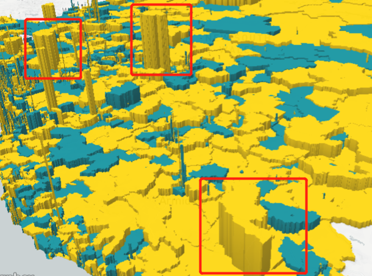

CODE1230 ASSIGNMENT 3

The latest census released Monday by the Australian Bureau of Statistics shows that there are only 86.5 men per 100 women. Data show that in all ages, the number of women exceeds 19064 to 18343 years of age. [Western Australia (2018)]
In some rural areas, the number of women is significantly higher than that of men. With the passage of time, the number of men and women is increasing. If we do not attach importance to this problem, there will be a serious imbalance between the number of men and women in the future. This is not conducive to human reproduction and cultural heritage.
Among them, the representative map is Bulbudgeree，Abercrombie， Barool etc. You can see clearly from the map that the number of women in these areas is obviously more than that of men.

"Oh, you can't argue about these statistics; you can't argue about 50 percent of women sitting at the table because most of them want to stay at home and have children," an elderly gentleman said at a government meeting when the number of women in the government attended the discussion. "[ Influence, A. (2018)] As a result of poor education, many men believe that women want to stay at home and have children, leading to more women than men in rural areas.
A national research project recorded in the 1998 Report "Missed Opportunities: Making Use of Women's Potential in Australian Agriculture"* found that women in agricultural enterprises are both "glue" (by assuming primary responsibility for household maintenance and farming practices) that gathers household farms together and that agricultural women are also part of their rural communities The necessary voluntary contributions were provided, estimated at least $500 million per year. Farm women contribute about $8 billion annually to the rural economy through free housework. As pointed out in the report, despite the tremendous contributions made by women, they still account for less than 20 per cent of agricultural decision makers. [ Ltd, O. (2018)] Women are regarded as the main labor force in the countryside, and they do not have the dominant power. Because their ability to work is outstanding, the countryside will leave women as labor force.
The number of rural women is obviously more than that of men, which can be solved from two aspects. On the one hand is to retain the local men, on the other hand is to attract more men from other places here. In order to improve the ideological level of the local people, schools and gymnasiums have been set up in these areas to attract foreigners. As we all know, sports competition is the hobby of many men. As long as there are sports venues, there will be many men. So if the stadium is set up here, more people will come to the stadium, which will increase the number of local men. The survey shows that the local people's thinking is a little backward, so the idea of "women want to stay at home and have children" will be widespread in the minds of the local people. So we can build more schools to educate the local people in ideology, so as to eliminate this idea, let women go to other places or let men stay.

And besides gymnasiums and schools, shopping malls and residential areas can be built to improve the living convenience of this area. People can live here, so that the daily journey to school will be much shorter. In their spare time, people can also go shopping in the mall and relax themselves. In this way, people can choose to live in this place more, so as to solve the problem of "the number of women is much larger than the number of men".